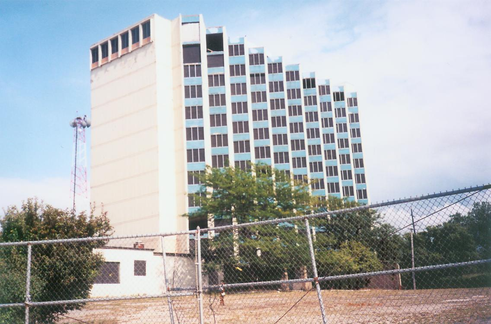

I want to thank everyone who came out to see me fumble my way through a three hour talk at Zane State College this past Saturday; I had a great time and really enjoyed meeting everyone. Special thanks to Mr. Gary King for inviting me to appear. I will be doing two more Zane State classes, one on September 30 and the other October 14. Both are Saturday classes, and both begin at 1PM and go until 3:30 or 4. Though the fee is nominally $20 per class (payable in advance or, if you'd prefer, at the door--but let them know you're coming), there is a small saving if you'd like to sign up for both remaining classes as a package. In that case, it's $30 for both classes. Here are the details:
Saturday, September 30
1-4 PM - Zane State College - Zanesville, Ohio
"Forgotten Ohio History: Ghost Towns and Abandoned Landmarks"
Saturday, October 14
1-4 PM - Zane State College - Zanesville, Ohio
"Researching Ohio Hauntings: The Truth Behind the Legends"
As the names indicate, the first remaining class will cover all facets of abandoned and forgotten Ohio, particularly ghost towns and significant abandoned buildings, while the second is a Halloween special, a tour through the many hundreds of unique and fascinating ghost stories told about places in our lovely state. If you're interested in attending, this is how to sign up:
Contact Shirley Hesson
(740)588-1324 or (740)432-6568
Cost $20 Per Class or $30 Altogether
I have word that the wonderful Lima Tuberculosis Hospital, which recently experienced a partial collapse, has been altogether demolished. I await confirmation, but if true, it will be a real loss to everyone who enjoys abandoned buildings. The TB Hospital even seemed to be relatively safe to explore; I don't think I ever spoke to anyone who got in trouble there. It's also the first place where I ever had the chance to lie on the slab in a hospital morgue. Great fun.
Next, as promised two updates ago, I'd like to initiate a new semi-regular feature to the updates page: Name That Building. You see, I have quite a collection of abandoned buildings--many of which I've explored and photographed thoroughly--that can't go up on the website until I've figured out what the hell they are. I used to sometimes give things my own name until an exasperated e-mailer corrected me. For instance, the Inland Products Rendering Plant was for more than a year called the Alum Creek Sanitation Building out of sheer ignorance. But lately I've been hesitant to condemn myself to renaming, re-linking, and re-titling all the pages, and have as a consequence accumulated some amazing locations that are completely unidentified. Someday I might even create a section devoted to these "mystery spots," but for now I'm just going to post them here and hope someone can help me out.

TV Station?
Exit 175, I-90 East - Cleveland, Ohio
This magnificent abandoned building--at least ten stories tall--stands very close to the Lake Erie shore, just east of downtown Cleveland. I happened upon it while staying at the Sheraton nearby during a work conference in August of 2004, and drove out to explore it with some friends.
I remember having some indication that it was an old TV station (a FOX affiliate, maybe?) which had moved away, but that's not confirmed. As you can tell, this beauty is quite visible from a number of central spots in Cleveland, as it towers above Exit 175 on I-90 East.
It's quite abandoned, situated in the middle of a weed-choked parking lot, and surrounded by temporary fencing. Some of the highest levels are missing their window-walls, as I was able to make out with my zoom.
IDENTIFIED! This building is the former Lakefront Plaza Hotel. Cleveland's TV8 FOX affiliate is located next door, but it was never apparently a TV station. Special thanks to Joe, Vin, Lynne, and Sean for being on the ball big-time with the answer. Amazingly, the building had been explored by my good friend Rookie from Illicit Ohio. The weird thing is, I told him about it in early 2005 and made plans to go on an outing to see it with him, but, being the unreliable dick and terrible friend that I am, I had to drop out last-minute and never got to explore the building I first noticed the summer before. After that, Rookie travelled to Cleveland on his own, and actually stumbled across the building himself, and explored it thoroughly, taking dozens of typically-awesome photographs of the interior and exterior alike. You can see his page here: Lakefront Plaza.
Once again, I'd like to mention my friend Mandi's website Redheads Have More Fun. It's not Forgotten Ohio-related, but she's a good friend of mine and a number of people have enjoyed checking out her personal homepage.
I think that's all for now. Stay cool, and keep in touch. More again soon.
I am reading:
FICTION - No Country for Old Men, by Cormac McCarthy
Stories, by T.C. Boyle
NONFICTION - The Big Con, by David Maurer
Hitler's Willing Executioners, by Daniel Jonah Goldhagen
I am listening to:
THE BOOMTOWN RATS - "I Don't Like Mondays"